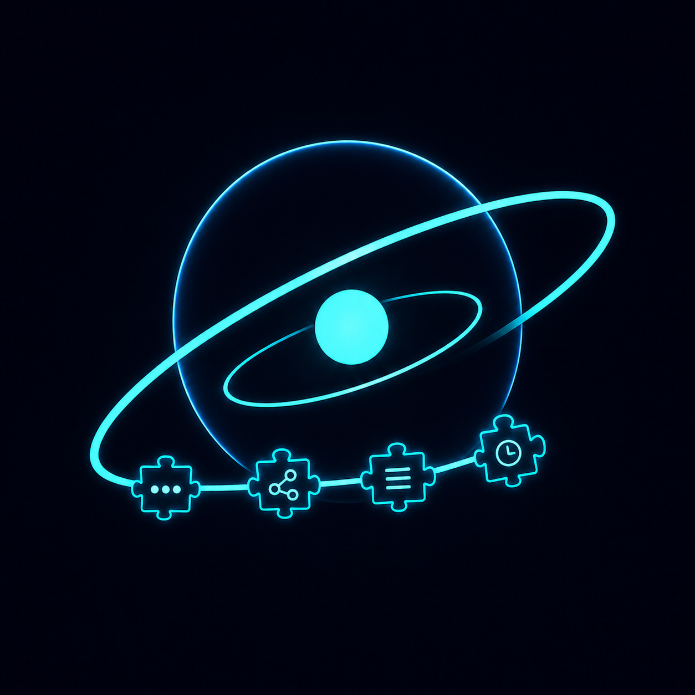

01 / 08
Applications, Registrations and Events
Registration systems that keep applications, participant information, confirmations, limits, reminders, and results organised.

VOOGLIN Start a projectAutomation and digital workflows
Vooglin creates practical automation and digital workflows for small organisations, project teams, event organisers, and growing businesses.
The Vooglin approach
We organise scattered information, connect the right tools, and create clear systems that make everyday work easier to manage.
The service journey
Move through the Vooglin universe one chapter at a time. Every planet represents a practical system designed around real people, information, and work.
Registration systems that keep applications, participant information, confirmations, limits, reminders, and results organised.
Scroll controls the journey
Orbital support
Smaller improvements and ongoing support can orbit the main system—keeping it useful, understandable, and ready for what comes next.
Open a channel
Tell Vooglin which repetitive process takes too much of your time. We will look at what can be simplified and propose a practical solution.
info@vooglin.ee Start a conversation